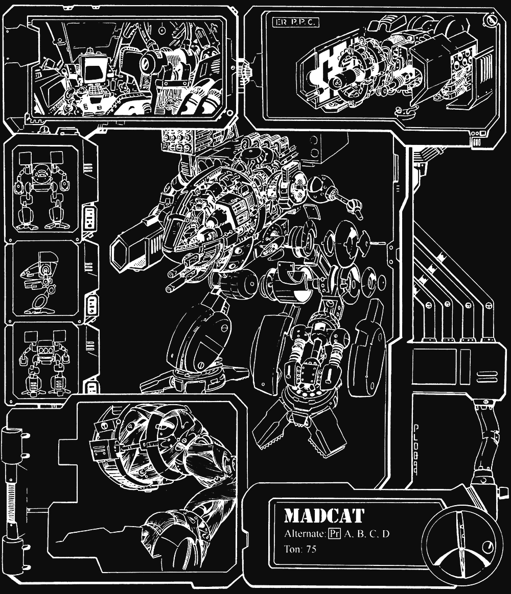

75 tons · Clan OmniMech · 20 configurations · 2945 to 3142

Its name is Timber Wolf. I will use that name, because it is the name of the machine.
The Inner Sphere calls it the Mad Cat, and the technician caste finds this funnier than the warriors do. In 3049 a man named Phelan Kell met one on The Rock in a Wolfhound. His targeting computer could not identify what it was looking at and flickered between the two profiles it held that came closest: MAD, for their Marauder, and CAT, for their Catapult. Their Precentor Martial reviewed the recording afterwards and made the error permanent.
So the most feared machine of the invasion carries a name assembled from two failures of recognition. We have not corrected them. There is no advantage in it.
What it is. Seventy-five tons. Walk five, run eight. Twelve tons of ferro-fibrous. Twenty-seven and a half tons of pod space. Clan Wolf produced it in 2945 as one of three second generation OmniMechs, and of the three it is the one that mattered.
What the Inner Sphere did not understand. Not the weapons. They could count the weapons. What they could not accept was that a heavy machine could move at that speed while carrying that armament and that armour. Their Precentor Martial was told to replicate it by modifying Catapults and answered, correctly, that it could not be done.
And what they still get wrong. The 20 entries in the table below are not variants. They are configurations. The engine, the structure, the armour and the heat sinks are fixed; everything else is pod-mounted and my caste can exchange one loadout for another in hours. A warrior selects the configuration for the Trial. The machine your scouts identified this morning is not the machine walking at you now.
A note on this one. Clan machines on this site are written from the perspective of a Clan technician rather than the Inner Sphere MechTech who narrates the rest. Same research, same data, different chair.
Seventy-five tons, walk five, run eight, twelve tons of ferro-fibrous. State those three numbers together to an Inner Sphere engineer of the period and watch the objection form. Their heavies achieve two of the three. This achieves all of them and retains twenty-seven and a half tons of pod space.
Their readouts claim it carries approximately the firepower of a Marauder and a Catapult combined. For once their assessment is close. On the Alpha Strike card a Prime is 5/5/4. A MAD-3R is 2/3/3, a CPLT-C1 is 2/3/2. Combined, four, six and five. The Timber Wolf exceeds that at short range and falls marginally short at medium and long, while being faster and better armoured than either, on one chassis, with one pilot.
The Prime configuration spends its pod space on two ER large lasers, two LRM 20 racks, two ER mediums, a medium pulse laser and two machine guns. Seventeen double heat sinks. Their documentation describes this as sufficient for a skilled pilot. That is an accurate statement and it is also a warning. A competent warrior fires most of it, most of the time. An incompetent one shuts down and is recovered by my caste, which is the part of the work I could do without.
Understand the pod space and you understand the machine. Everything named in the paragraph above is removable. What remains fixed is the endo-steel structure, the 375 extralight engine, the armour and the heat sinks. That is why the table lists twenty configurations across two centuries and not twenty rebuilds.
Two flaws, stated plainly, because pretending otherwise helps nobody. Its targeting is improved at medium range, which is not where a machine of this reach should prefer to fight. And the head armour is one point below what the design should carry. We have known this for two hundred years. It has not been corrected.
Every Inner Sphere chassis on this site has variants: separate machines, built in different decades, in different factories, often for different realms. A commander fields whichever one was issued.
| Inner Sphere variant | Clan configuration | |
|---|---|---|
| Changed by | A factory | A technician |
| Takes | Months, where it happens at all | Hours |
| You may field | The one you possess | Whichever suits the engagement |
Against a MAD-3R your intelligence is worth something. Against a Timber Wolf you know the chassis, the speed and the armour. Everything that will actually kill you was fitted this morning.

Clan Wolf produced it in 2945 as one of three second generation OmniMechs intended to replace the ageing Woodsman. The Gargoyle proved a capable fast assault design. The Naga proved an adequate fire support platform. Every Clan, including those that did not hold the rights, recognised within a season which of the three mattered.
Clan Wolf kept it. The production rights were defended in Trial after Trial and were never successfully taken. Until the invasion the entire supply came from one facility on Strana Mechty, and another Clan acquired a Timber Wolf by trade, by gift, or by taking it from a battlefield.
Then the part my caste does not enjoy recounting.
The Wars of Reaving severed us from the Homeworlds. The Blakists scoured Tamar. By 3080 the Timber Wolf was being assembled by hand at the W-7 plant on Weingarten, and certain components were being machined individually because the manufacturing data for them no longer existed. Losses exceeded production. The Wolves began evaluating other designs.
Consider that. The machine that broke the Inner Sphere's understanding of what a BattleMech could be, produced one at a time, from measurements taken off surviving examples, because we had lost the drawings.
Alaric Ward corrected it. On forging the Wolf Empire he ceded the W-7 facilities to Clan Hell's Horses and ordered the Kallon plant on Thermopolis retooled. The Timber Wolf returned to its proper place in the touman.
Two further notes, offered without comment. The Inner Sphere built the Rakshasa at their New Avalon Institute of Science for the express purpose of emulating the Prime configuration. Without Clan weapons and Clan materials they could not approach it. And we ourselves built the Linebacker to replace the Timber Wolf. It is faster. It carries less armour and ten tons less pod space. We improved the one quality that was already adequate.
Every verdict below is against other Timber Wolf configurations. Worth saying plainly that the Trap test finds nothing here: every configuration carries the same armour, the same frame and the same engine, so none of them can be strictly beaten on the card the way an Inner Sphere variant can. The tiers are entirely judgement on this page.
Nothing in its era does the chassis's job better for the money.
Does the job competently. Another variant does it better or cheaper, but there is no reason to avoid this one.
Only earns its Battle Value if you specifically need what it carries. C3, stealth, a command console, flak, jump jets.
Another variant in the same era, at no more than 3 percent above its Battle Value, matches or beats it on every Alpha Strike damage band, on armour, on structure, and carries every special ability it has. Nothing gained, something lost, no dearer.
Only the Trap tier is calculated. It is worked out from the variant data rather than decided by me, which means it is falsifiable: to argue with it you only have to name something the cheaper machine gives up. The other three are my opinion and you should treat them that way. 0 of the 20 Timber Wolf variants fail the Trap test. The full rating scale is here, including what it deliberately does not measure.
All 20 are in the table further down. These are the ones that change what you are actually facing.
75 tons · BV 2737 · PV 54 · Brawler · 2945
Walk 5 / Run 8 / Jump 0 · 17 Clan Double · 375 XL (Clan) Engine
2x ER Large Laser, 2x ER Medium Laser, 2x LRM 20, 1x Medium Pulse Laser, 2x Machine Gun
The configuration on every Inner Sphere recognition poster, and deservedly. Two ER large lasers, two LRM 20 racks, ER mediums and a pulse for the close work, machine guns for infantry. It does serious damage from long range and it is still dangerous when you close. If a warrior fields one configuration and no other, it should be this.
75 tons · BV 2854 · PV 59 · Skirmisher · 2945
Walk 5 / Run 8 / Jump 0 · 20 Clan Double · 375 XL (Clan) Engine
2x ER PPC, 3x Medium Pulse Laser, 1x Streak SRM 6, 1x ER Small Laser
Two ER PPCs and five extra heat sinks to run them. It strips close to two tons of armour off something at extreme range, and three medium pulse lasers and a Streak six wait for whatever survives the walk in. The most damage of any Timber Wolf at short range.
75 tons · BV 2682 · PV 51 · Skirmisher · 2945
Walk 5 / Run 8 / Jump 0 · 15 Clan Double · 375 XL (Clan) Engine
2x ER PPC, 4x Streak SRM 6, 1x ER Small Laser
Two ER PPCs and four Streak SRM 6 racks, two of them mounted facing backwards. Whoever specified this expected the machine to be flanked and ensured it would not matter. Brutal at both ends of the range band and nothing in the middle.
75 tons · BV 2462 · PV 54 · Skirmisher · 3050
Walk 5 / Run 8 / Jump 5 · 16 Clan Double · 375 XL (Clan) Engine
1x Large Pulse Laser, 2x Medium Pulse Laser, 4x SRM 6, 2x Machine Gun, 1x ER Small Laser
Five jump jets, one hundred and fifty metres, on a seventy-five ton machine already running at eight. Large pulse, two medium pulse, four SRM 6 racks and two machine guns. Built for urban work, and in a city there is very little answer to it.
75 tons · BV 2714 · PV 62 · Missile Boat · 3142
Walk 5 / Run 8 / Jump 0 · 17 Clan Double · 375 XL (Clan) Engine
2x Improved Heavy Medium Laser, 2x ER Medium Laser, 2x LRM 20, 1x ER Small Pulse Laser, 2x ER Small Laser
Two Artemis V LRM 20 racks with six tons of reloads, improved heavy mediums and ER mediums in the arms. The best long range damage in the chassis and enough ammunition to still be shooting at the end of the game.
75 tons · BV 2791 · PV 55 · Juggernaut · 3100
Walk 5 / Run 8 / Jump 0 · 15 Clan Double · 375 XL (Clan) Engine
2x ER Medium Laser, 1x Ultra AC/20, 2x Streak SRM 6, 1x ER Small Laser
An Ultra AC/20 in the right arm, Streak sixes in the torsos, and a supercharger to get it into range before anyone can stop it. Seven damage at short and nothing at all past medium. A specialist, and a nasty one.
75 tons · BV 2900 · PV 51 · Missile Boat · 3052
Walk 5 / Run 8 / Jump 4 · 16 Clan Double · 375 XL (Clan) Engine
2x ER Large Laser, 2x ER Medium Laser, 2x LRM 20, 1x ER Small Laser
Aidan Pryde's machine. Falcon Guard, Tukayyid, and a name my caste does not say lightly. ER larges, two LRM 20s, ER mediums and a small, plus four jump jets. A Prime that can get somewhere the Prime cannot.
75 tons · BV 2627 · PV 46 · Sniper · 3077
Walk 5 / Run 8 / Jump 0 · 16 Clan Double · 375 XL (Clan) Engine
2x ER Large Laser, 2x ER Micro Laser, 2x LRT 15
The submerged configuration. Four UMUs, a HarJel system to seal hull breaches, and LRTs instead of LRMs. Of no use on dry land, and the only configuration here that can fight on a lake bed.
Fielding one. You possess more firepower than anything likely to oppose you, and greater speed than most of it. This is not an argument for closing. A Prime does its work at range and a warrior who charges is trading armour with a machine that costs a third as much. Watch the heat. Seventeen doubles is sufficient for a skilled pilot, and the corollary of that sentence is the important half.
Opposing one. If you are reading this from the Inner Sphere, here is the honest answer: numbers. At 2224 to 2923 Battle Value you may field three lesser machines for one of ours, and it cannot engage all three at once. Take the head shot if it is offered, for the reason stated above. And do not assume the configuration your scouts reported is the configuration you will face.
What I observe going wrong. Inner Sphere warriors fight it as though it were a Marauder, because it resembles one. It is not a sniper. It does its damage at long range and remains dangerous when you arrive. There is no range bracket at which you are safe from it. That was the design requirement.
If you run solo games with our AI opponent, the Timber Wolf is the most varied chassis on the site, and that is the point of it.
If you want a solo game that does not settle into a firing line, this is the chassis to put on the other side.
Damage figures are the Alpha Strike short, medium and long values. Every configuration shares the same engine, frame and armour, so only the pods change.
| Variant | Intro | BV | PV | Role | Weapons | S/M/L | Verdict |
|---|---|---|---|---|---|---|---|
| Late Succession War - LosTech | |||||||
| A | 2945 | 2854 | 59 | Skirmisher | 2x ER PPC, 3x Medium Pulse Laser, 1x Streak SRM 6, 1x ER Small Laser | 7/7/3 | Worth it |
| B | 2945 | 2224 | 48 | Sniper | 1x Large Pulse Laser, 1x Small Pulse Laser, 1x Gauss Rifle, 1x LRM 10, 1x SRM 4 | 4/4/4 | Solid |
| C | 2945 | 2500 | 50 | Sniper | 2x ER Large Laser, 1x Ultra AC/5, 2x LRM 15, 1x Anti-Missile System, 1x ER Medium Laser | 4/4/4 | Solid |
| D | 2945 | 2682 | 51 | Skirmisher | 2x ER PPC, 4x Streak SRM 6, 1x ER Small Laser | 5/5/3 | Worth it |
| Prime | 2945 | 2737 | 54 | Brawler | 2x ER Large Laser, 2x ER Medium Laser, 2x LRM 20, 1x Medium Pulse Laser, 2x Machine Gun | 5/5/4 | Worth it |
| Clan Invasion | |||||||
| N | 3050 | 2862 | 53 | Brawler | 2x ER PPC, 2x LRM 15, 2x Medium Pulse Laser, 4x Machine Gun | 5/5/4 | Solid |
| S | 3050 | 2462 | 54 | Skirmisher | 1x Large Pulse Laser, 2x Medium Pulse Laser, 4x SRM 6, 2x Machine Gun, 1x ER Small Laser | 6/6/2 | Worth it |
| (Pryde) | 3052 | 2900 | 51 | Missile Boat | 2x ER Large Laser, 2x ER Medium Laser, 2x LRM 20, 1x ER Small Laser | 4/4/4 | Worth it |
| TC | 3052 | 2903 | 52 | Skirmisher | 2x Large Pulse Laser, 2x ER Medium Laser, 2x Streak SRM 6, 1x ER Small Laser | 5/5/3 | Solid |
| E | 3059 | 2444 | 53 | Sniper | 2x ER Large Laser, 2x ATM 9, 1x Light TAG | 7/5/4 | Worth it |
| H | 3059 | 2627 | 58 | Missile Boat | 2x Heavy Large Laser, 2x LRM 20, 1x ER Small Laser | 6/6/4 | Solid |
| (Bounty Hunter) | 3060 | 2829 | 59 | Brawler | 2x Large Pulse Laser, 4x Medium Pulse Laser, 1x Light TAG | 6/6/3 | Worth it |
| Jihad | |||||||
| (Bounty Hunter 2) | 3068 | 2799 | 55 | Brawler | 1x Large Pulse Laser, 2x ER Medium Laser, 3x SRM 4, 2x AP Gauss Rifle, 3x Streak SRM 4, 1x ER Small Laser | 6/6/2 | Solid |
| M | 3068 | 2741 | 50 | Brawler | 2x ER PPC, 1x Large Pulse Laser, 4x LRM 5, 1x Heavy Flamer | 4/4/4 | Situational |
| F | 3069 | 2764 | 54 | Missile Boat | 2x ER Large Laser, 3x ER Medium Laser, 2x LRM 20, 3x AP Gauss Rifle | 5/5/4 | Solid |
| Z | 3072 | 2923 | 64 | Skirmisher | 2x ER Large Laser, 2x ER Medium Pulse Laser, 2x Improved ATM 9 | 6/5/4 | Solid |
| U | 3077 | 2627 | 46 | Sniper | 2x ER Large Laser, 2x ER Micro Laser, 2x LRT 15 | 3/2/2 | Situational |
| Late Republic | |||||||
| W | 3100 | 2791 | 55 | Juggernaut | 2x ER Medium Laser, 1x Ultra AC/20, 2x Streak SRM 6, 1x ER Small Laser | 7/7/0 | Situational |
| BLO | 3129 | 2611 | 62 | Skirmisher | 2x ER PPC, 2x Streak SRM 6, 1x TAG, 1x ER Small Laser | 6/6/3 | Situational |
| Dark Age | |||||||
| T | 3142 | 2714 | 62 | Missile Boat | 2x Improved Heavy Medium Laser, 2x ER Medium Laser, 2x LRM 20, 1x ER Small Pulse Laser, 2x ER Small Laser | 7/7/4 | Worth it |
Availability for the Prime by era, straight off the Master Unit List.
| Era | Available to |
|---|---|
| Late Succession War - LosTech (2901 - 3019) | HW Clan General |
| Late Succession War - Renaissance (3020 - 3049) | HW Clan General |
| Clan Invasion (3050 - 3061) | HW Clan General, IS Clan General, Wolf's Dragoons |
| Civil War (3062 - 3067) | HW Clan General, IS Clan General, Wolf's Dragoons |
| Jihad (3068 - 3080) | Escorpión Imperio, HW Clan General, IS Clan General, Society, Wolf's Dragoons, Word of Blake |
| Early Republic (3081 - 3100) | Clan Diamond Shark, Clan Jade Falcon, Clan Nova Cat, Clan Wolf, Clan Wolf (in Exile), Escorpión Imperio, Kell Hounds, Mercenary, Rasalhague Dominion, Raven Alliance, Republic of the Sphere, Wolf's Dragoons |
| Late Republic (3101 - 3130) | Clan Jade Falcon, Clan Nova Cat, Clan Sea Fox, Clan Wolf, Clan Wolf (in Exile), ComStar, Escorpión Imperio, Kell Hounds, Mercenary, Rasalhague Dominion, Raven Alliance, Republic of the Sphere, Wolf's Dragoons |
| Dark Age (3131 - 3150) | ComStar, Escorpión Imperio, IS Clan General, Kell Hounds, Mercenary, Republic of the Sphere, Scorpion Empire, Wolf's Dragoons |
| ilClan (3151 - 9999) | IS Clan General, Kell Hounds, Mercenary, Scorpion Empire, Wolf's Dragoons |
90 tons · Clan · 6 variants · BV 2491 to 3168
Clan Diamond Shark built this for trade, ninety tons on a hull based strongly on the Timber Wolf. They chose the Inner Sphere name deliberately, because that is the name that sells.
55 tons · Clan · 8 variants · BV 1697 to 2515
Fifty-five tons, and the Sharks trading on the same reputation a second time in the medium bracket.
60 tons · Clan · 15 variants · BV 1892 to 2676
The Mad Dog, derived from both Clan Coyote’s Lupus and Clan Wolf’s Timber Wolf moulds.
75 tons · Inner Sphere · 36 variants · BV 1335 to 2708
Half the name, and the machine Kell’s targeting computer reached for first. Compare the two and you can see exactly why.
65 tons · Inner Sphere · 19 variants · BV 1242 to 1880
The other half. Shoulder-mounted missile racks and a similar stance, and between them they explain the whole misidentification.
Because a targeting computer could not identify it. Phelan Kell encountered one in 3049 and his Wolfhound flickered between the two profiles it held that came closest: MAD for Marauder, CAT for Catapult. Precentor Martial Anastasius Focht reviewed the recording afterwards and made the designation official. Timber Wolf is the machine's name. Mad Cat is what the Inner Sphere calls it.
The Prime for most engagements, and the reputation belongs to it. The A hits hardest at range with twin ER PPCs, the S is frightening in a city with its five jump jets, and the T carries the best long-range damage in the chassis with enough ammunition to use it.
A variant is a different machine built in a factory. A configuration is the same machine with different weapon pods fitted, and a technician can change it in hours. The Timber Wolf has twenty-seven and a half tons of pod space, which is why there are 20 configurations rather than 20 separate models.
With numbers, and by refusing to fight it at its own range. At 2224 to 2923 Battle Value you can field several cheaper machines for one, and it cannot shoot all of them at once. It also carries the weak head armour quirk, so a head hit is worth taking if the shot is there.
Aff, though it became rare. After the Wars of Reaving and the Blakist destruction of Tamar, supply could not keep up with losses, and by 3080 they were being built by hand at Weingarten with some parts individually machined because the data had been lost. Alaric Ward later had the Kallon plant on Thermopolis retooled to produce them again.
Stats on this page are generated directly from our variant database, which is reconciled against the Master Unit List for Battle Value, introduction dates and per-era faction availability. Alpha Strike damage values are the standard card figures. If you spot something wrong, tell me and I will fix it.